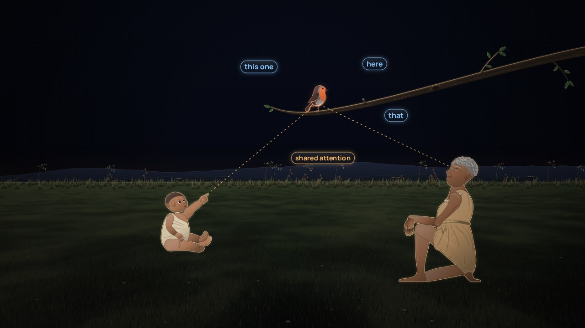

Keeping meaning current
Keeping it true
Three dashboards, three numbers for one measure. The agent recommends, people approve, and everything is versioned.
Eight situations about meaning and machines: a confident wrong answer, a rule in the wrong place, two versions of one metric, a standard adopted whole, three definitions of one word. Decide what you'd do; each answer explains why. Your answers stay in this browser.
Keep going
Keeping meaning current
Three dashboards, three numbers for one measure. The agent recommends, people approve, and everything is versioned.

Language and meaning
Four offices, four numbers, one word. Before you can count anything, you have to agree what it is.